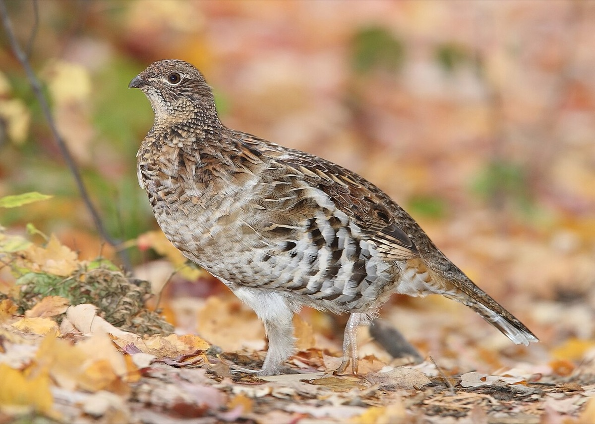
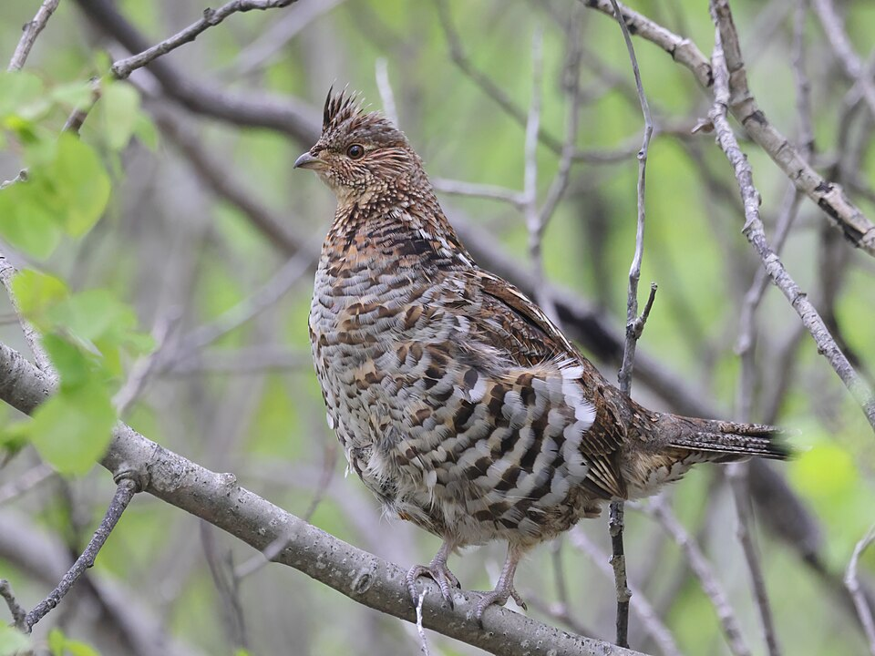

Ruffed Grouse
Bonasa umbellus


Listen
Drumming (a male claiming territory): a 13-second clip, cut from a 13-second recording (trimmed, with a short fade-out, and saved as a small MP3), so it plays without an internet connection. Recording by NPS & MSU Acoustic Atlas / Jennifer Jerrett, Public domain, on Wikimedia Commons, where the whole recording is (an internet connection is needed to open it).
- Also called
- Partridge
- Kind
- bird · Phasianidae
- Native to Vermont
- yes
- Legal status
- Game bird with regulated seasons (details not stated on the pages read); 'fairly common' year-round resident (checked 2026-10-30)
- Look-alikes
- Spruce grouse (very rare in Vermont)
Names
Ruffed grouse, commonly called partridge. One of Vermont's two grouse (spruce grouse is the other and is very rare). Found in every region.
Range and habitat
Non-migratory and ground-dwelling. Preferred habitat is dense young forest, especially aspen and paper birch, with three age classes within a 40-acre home range: 0 to 10, 10 to 25, and over 25 years. Home ranges are 6 to 40 acres (males 6 to 10 acres). Softwood patches give winter thermal protection.
How to identify (by season; look-alikes and the key difference)
Known by its explosive flush when you get too close and by the drumming of males in spring. Appearance is not described in the sources read.
Through the year
Dates are typical for Vermont and shift with elevation and year; "approximate" means the source gave a season and the dates are a translation of it.
| When | What | Look for | What to do | Dates |
|---|---|---|---|---|
| Apr 1 to Apr 30 | calling (watch) | Males drum: a low-frequency wing-beating roll from a log or rock wall, with dense cover around the drumming site. Courtship, drumming and strutting are in April. | - | stated |
| May 25 to Jun 15 | young (watch) | Chicks hatch in late May or early June (nine to 14 eggs, incubated 23 days); the hen and brood use brushy areas, young hardwoods and field edges where insects are plentiful. Chicks fledge 10 to 12 days after hatching. | - | stated |
| Dec 1 to Mar 31 | sign (watch) | In winter the birds eat buds and catkins of mature aspen, birches, hophornbeam and hazel; when powder snow is deep enough they dive into the snow to roost. | - | approximate |
Signs on the land (tracks, scat, browse, nests, holes, calls)
- Drumming sites: elevated logs at least 8 inches in diameter, large stones or rock walls with overhead and surrounding cover.
- Nests: a well-camouflaged depression at the base of a tree in open hardwoods, or just under the edge of a slash pile in a cutover.
- Snow roosts: holes in powder snow.
- Tracks are not described in the sources read.
Role in the forest (what it eats, what eats it, what it needs)
Spring and summer: grasses and insects, with leaves, fruits and seeds of aspen, blackberries, raspberries, elderberries, clover and wintergreen. Fall: beechnuts and acorns. Winter: buds and catkins of aspen, birches, hophornbeam and hazel. Annual mortality approaches 70 percent; grouse are prey for foxes, raccoons, coyotes, skunks, bobcats, goshawks, Cooper's hawks and great horned owls. Populations seem to cycle every 8 to 10 years, cause unknown.
What helps it thrive (light, soil, shelter, food and the trees it uses)
- Dense young forest, in three age classes. The Guide says superior habitat has three critical age classes of forest (0 to 10, 10 to 25 and 25-plus years) within a 40-acre home range, with seasonal food near thick woody cover; aspen and paper birch are the most preferred early-successional trees (Quaking Aspen, Paper Birch).
- Breeding cover: hardwood stands 10 to 25 years old with a few scattered logs at least 8 inches across that lie off the ground, or large stones or rock walls, for drumming; the best drumming sites have overhead cover from tree crowns and dense surrounding cover from sapling thickets, brush or logging slash.
- Nests and broods: nests are at the bases of trees in open hardwood stands or under the edge of slash piles in cutovers; broods use brushy places and sapling stands, lowland young hardwoods and alders, and edges of openings with plenty of insects.
- Food: grasses and insects in spring and summer; leaves, fruits and seeds of aspen, blackberries, raspberries, elderberries, clover and wintergreen; in fall beechnuts and acorns; in winter the buds of mature male aspen. Patches of softwood give thermal protection in winter.
- What to do (the Guide): make dense, young forest the first priority; give aspen stands priority because they sprout prolifically when cut, and cut them in fall when dormant; divide the area into 2- to 5-acre stands and treat a quarter of them every 10 years in a checkerboard; prune and release apples, hawthorn, cherries, dogwoods, nannyberry and sumac; keep quarter- to half-acre patches of softwood for winter cover.
Managing for it (habitat practices) and living with it (conflicts and damage)
The department's recipe, from the Landowner's Guide and species page:
- Make aspen the priority: it sprouts when cut. Stands with a minor aspen component can convert to mostly aspen if clearcut during dormancy (fall, once leaves are off).
- Divide the area (ideally about 40 acres) into stands of 2 to 5 acres; every 10 years treat a quarter of them in a checkerboard, oldest aspen first. Within a stand: prune and release fruit trees and shrubs (apple, hawthorn, cherry, dogwood, nannyberry, sumac); keep 1/4 to 1/2 acre patches of softwood (hemlock, cedar, spruce-fir) for winter cover; keep rock walls clear and leave several large elevated logs as drumming sites; keep about 10 percent of the area in herbaceous openings (seed landings and woods roads, mow periodically); keep mast trees (oak, hophornbeam, beech) to no more than about 20 to 25 percent of the area; clearcut the rest in winter.
- Do not clearcut a key mast area such as a high-value oak or beech stand for grouse; pick another site.
- Aspen regeneration is not guaranteed: there should be vigorous aspen already in the stand.
- For an unmanaged woodlot with aspen over 40 years old, treat half the stands and the other half 10 years later, keeping groups of mature aspen for winter food. Stands without aspen: treat every 15 years, or plant aspen or apple.
- Nests are vulnerable in cutovers; the sources read give no grouse-specific nesting window for work.
Legal status
A game bird; the species page links hunting seasons and regulations but states no legal details.
Sources
- Vermont Fish & Wildlife Department, ruffed grouse: https://vtfishandwildlife.com/learn-more/vermont-critters/birds/ruffed-grouse (read 2026-10-30)
- Vermont Fish & Wildlife Department, A Landowner's Guide (complete PDF): chapter 26, Ruffed Grouse (read 2026-10-30): https://vtfishandwildlife.com/sites/fishandwildlife/files/documents/Learn%20More/LandownersGuide/Landowner-Guide-Complete.pdf
- Vermont Fish & Wildlife Department, A Landowner's Guide, Wildlife Habitat Management for Lands in Vermont, chapter 26 (Ruffed Grouse): https://vtfishandwildlife.com/sites/fishandwildlife/files/documents/Learn%20More/LandownersGuide/Landowner-Guide-Complete.pdf (read as text 2026-11-01)
What this page is based on
Kind of source: primary-agency (Vermont Fish & Wildlife species page and the department's Landowner's Guide, read as text)
What was read: The Vermont Fish & Wildlife ruffed grouse page (summarizing fetch, 2026-10-30; no tracks or sign, no hunting details, no last-updated date) and the ruffed grouse chapter of the department's A Landowner's Guide (PDF read as text; it cites the 2010-2020 plan era). The winter window translates 'winter'. Appearance is not described in the sources read. Habitat needs added 2026-11-01 from chapter 26 of the Vermont Fish and Wildlife Landowner's Guide (read as text).
Last checked: 2026-10-30
Vermont Woodland Owner's Reference, built 2026-11-09. Rules and dates here are summaries, not legal advice; dates shift with elevation and year. Photo and recording credits · The text is by Loop Works, CC BY 4.0 (pictures and recordings keep their own licenses) · Note: _reference/US-VT/Species/Ruffed Grouse.md